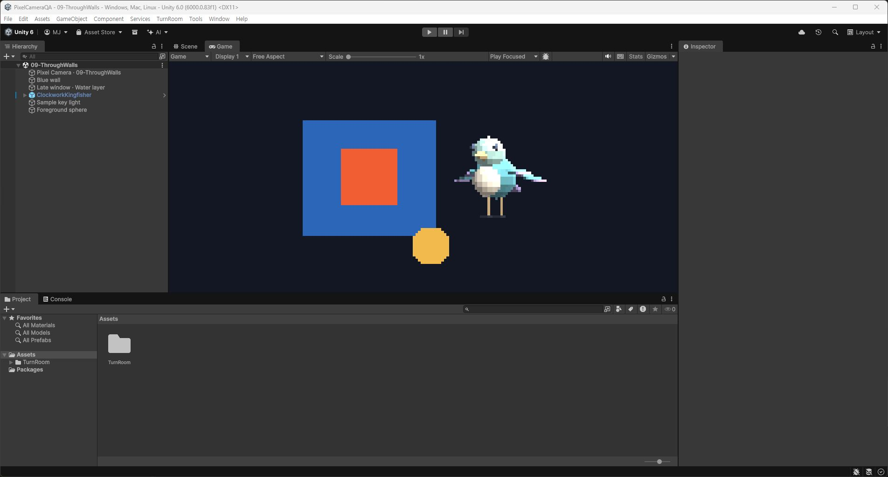

Tracefolio REPORTS & ISSUES
Tracefolio REPORTS & ISSUESP턴룸 › Pixel Camera작업 결과
Pixel Camera 0.1.0 구현·모델 샘플·실행 검증
검증 대기독립 설정 창과 공유 프리셋, 카메라 픽셀화·깊이 제어를 구현하고 Pixora 모델 4종을 포함했습니다. 실제 입력·테마 화면 검사는 보류입니다.
작업 결과
기능 구현, Windows 빌드·플레이어 렌더 검증과 로컬 패키지 생성이 끝났습니다. TurnRoom > Pixel Camera > Open에서 사용할 수 있습니다. 실제 마우스·키보드와 설정 창의 라이트·다크 화면 검사는 사용자의 화면 전환 금지 요청에 따라 보류했습니다.

변경 내용
적용 내용
- ToolWindow와 공통 UITemplate 기반 별도 설정 창: 프리셋 선택·생성·복제·저장, 카메라 적용, 미리보기.
- 카메라 컴포넌트와 공유 ScriptableObject 프리셋: 세로 픽셀 수, 확대, 색상 단계, 디더링, 근·원거리 클리핑.
- 후순위 레이어와 깊이 유지/초기화 선택. 투명 대상을 한 번 합성하는 실제 렌더 검사를 포함했습니다.
- Pixora의 ClockworkKingfisher, CourierDrone, SurveyorKit, TidewatchObservatory를 독립 GUID로 복사했습니다. FBX 원본 바이트를 보존했고 Pixora 경로 의존성이 없는 것을 검증했습니다.
- 샘플 씬 10개, 가이드 9개 언어, 영어 Unity 게임 뷰 캡처와 해시 기록. 공식 로고 미확인으로 logo:null입니다.
- 사용자 화면 방해가 반복되어 GUI 앱 실행을 중단했습니다. 교훈 검토: 기존 전역 포커스 금지 규칙에 숨김·배치 옵션을 비간섭 근거로 삼지 않고 명시적 재허락 전 GUI 프로세스를 실행하지 않는 조건을 통합했습니다. 원인을 특정 프로세스로 단정하지 않았습니다.
검증
- Unity 6000.0.83f1 / Direct3D11 / Built-in: 에디터 54개 검사, 새 프로세스의 재개방 15개 검사, Windows 플레이어 렌더 2개 검사 통과.
- 렌더 픽셀로 확대, 4×4 픽셀 블록, 클리핑, 벽 가림 유지/관통, 투명 단일 합성, 카메라 2개의 프리셋 공유를 확인했습니다.
- UI 바인딩과 직접 호출한 Undo/Redo는 통과했습니다. 실제 키보드 단축키 검증은 아닙니다.
- 정적 패키지 검사: 8,468,126바이트, 295개 에셋, 제품 에셋 99개를 현재 원본과 비교했습니다. 모델 4개·씬 10개·가이드 9개 포함, Development와 Pixora 제품 경로 제외.
- 9개 가이드의 로컬 링크·실제 게임 뷰 이미지·촬영 시 소스 해시 일치 검사 통과. 설정 창 캡처까지 최신이라는 뜻은 아닙니다.
- 실제 캡처는 94,312바이트의 PNG 원본입니다. Affinity 파일 접근이 PERMISSION_DENIED여서 편집·최적화하지 않았으며 200KB 이내 원본을 사용했습니다. 숨김 플레이어의 검은 캡처는 근거로 채택하지 않았습니다.
- 검사 요약 JSON, 패키지 비교 근거.
남은 사항
- 실제 마우스·키보드 입력과 라이트·다크 설정 창 화면·재캡처는 보류입니다. 전체 메뉴얼을 완료 처리하지 않았습니다.
- Built-in 전용입니다. URP/HDRP, XR, 카메라 스택과 다른 이미지 이펙트 통합은 이번 버전 지원 범위 밖입니다. 추가 장면 캡처의 성능은 대상 기기에서 별도 측정이 필요합니다.
- 로컬 패키지: Artifacts/PixelCamera/TurnRoom-PixelCamera-0.1.0-preview.unitypackage. 제품 소스 패키지를 공개 업로드하지 않았습니다.
- 이번 후속 작업에서는 앱 실행·재시작·GUI 조작을 하지 않고 파일·정적 검사·네트워크 작업만 수행합니다.
작업 시간
- 제안 시간: 최초 30
60분. 마무리 재개 예상 1020분(2026-11-01 01:17:14 KST). - 실제로 완료된 시간: 시작 2026-11-01 00:34:20 KST. 최종 패키지 빌드 종료 01:04:23.333 KST(30분 3초, delivery.json 실제 파일 기록 시각). 재개방 검사 종료 01:05:15.501 KST. 앞서 안내한 01:04:01은 빌드 검사 시작 시각이므로 종료 시각으로 정정합니다. 마무리 재개 01:17:14 KST. 전체 완료 시각 없음(보류 QA 존재).
- XERJ: 사용 — Tools/Search/Xerj.ps1 Search ToolWindow 결과를 실제 ToolWindow.cs와 대조했습니다. 인덱스 갱신은 frozen mappings identity 오류로 실패하여 누락 범위는 rg로 확인했습니다.